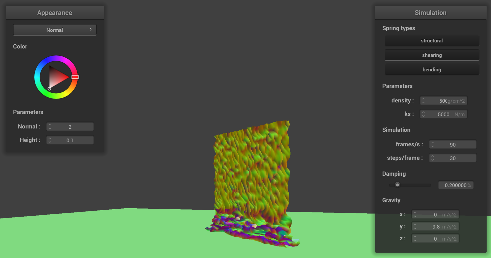

Overview
In this project, I implemented a cloth simiulator using masses and springs. For pointmasses, I summed all of the external and spring correction forces, and then found each point mass's new position based on whether the point mass was pinned or not. After building this foundation, I then added other features, including collisons with other objects such as a sphere and plane. I also implemented self-collisions. For the final part of the project, I implemented different kinds of shaders including diffusion, Phong, texture mapping, bump mapping, displacement mapping, and mirror shading.
Part 1: Masses and Springs
|
|
|
 without shearing
without shearing
|
With Shearing
|
|
All 3 constraints
|
- When there are 0 bounces, there is only direct lighting, so we cannot see any of the reflection from the two glass balls in the middle. Conversely, at 100 bounces, we can see the two balls clearly. The lighting looks pretty natural as it does in the real world. As bounces increase, we can see more detail.
Part 2: Simulation via Numerical Integration
|
ks = 500
|
ks = 5000
|
- Since the ks value represents the spring constant which is how stretched or contracted When the ks value is low, the cloth is more flexible and springy (more bounce). On the other hand, when the ks value is high, the cloth is much more stiff and less easy to bend as shown in the above pictures (left is ks = 500, right is ks = 5000).
 density = 15 g / cm^2
density = 15 g / cm^2
|
 500 g / cm^2
500 g / cm^2
|
|
damping = 0
|
 damping = 1
damping = 1
|
final Resting State With Original Parameters
|
- For density, higher density implies a heavier cloth, while lower density means the cloth is lighter. When I measured a density of 500 g/cm^2 shown on the right, the cloth is weighed down as shown by the clear parabolic divot in the simulation. The simulation on the left was of density = 15 g/cm^2, showing a much less drastic curve.
- Damping measures how oscillations in a system decay. Thus, when damping is close to 0, there is no energy lost so the cloth was able to bounce back and forth. However, when damping is closer to 1, there was only one bounce to the final state. For the damping = 1 state specifically, the movement of the cloth was very very slow– I had to decrease frames per second to speed it up.
Part 3: Handling collisions with other objects
- This part involved handling collisions.
|
5000
|
500
|
|
50000
|
Plane collision
|
Part 4: Handling self-collisions
-
- When the density is high, I noticed that there are many more folds in the cloth. When the density is low (second picture), the folds are much larger.
|

Density is High
|
Density is Low
|
- When I change the spring constant, ks. When ks is low, such as a value of 10, shown by the first picture, the cloth is springy. When ks is high at 2500, the cloth is much less springy.
 ks is low
ks is low
|
ks is high
|
Part 5: Shaders
- Blinn-Phong Shading uses ambient, specular, and diffuse lighting in separate calculations to show more depth and clarity of images.
- Only Ambient
- Only Diffuse
- Only Specular
- Full Model
- Mirror